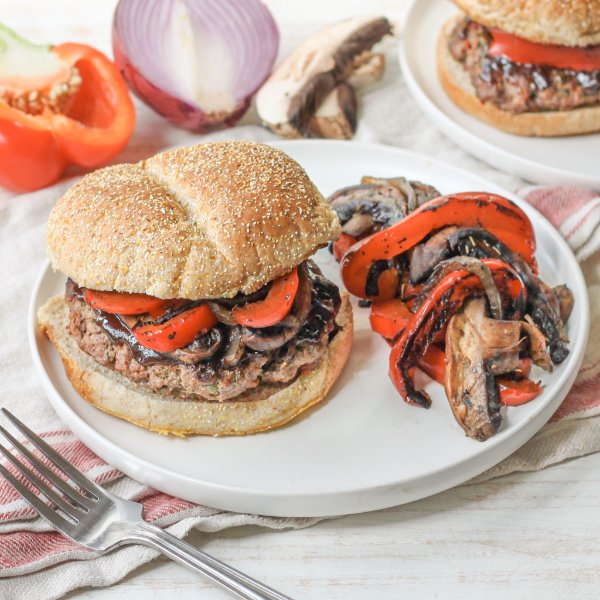

Beef Burger with Balsamic BBQ Sauce, Portobello Mushrooms & Peppers

Prep Time
40 min
Nutrition (per serving)
687.9 kcalCalories
41.5 gProtein
50.5 gCarbs
35.6 gFat
Full nutrition table
| Calories | 687.9 kcal |
| Total fat | 35.6 g |
| Saturated fat | 11.3 g |
| Trans fat | 1.8 g |
| Cholesterol | 115.7 mg |
| Sodium | 673.8 mg |
| Carbohydrates | 50.5 g |
| Fiber | 7.1 g |
| Sugars | 27.3 g |
| Protein | 41.5 g |
| Potassium | 1253.8 mg |
| Calcium | 119.5 mg |
| Iron | 6.8 mg |
| Vitamin A | 239.5 IU |
| Vitamin C | 87 mg |
| Vitamin D | 13.5 IU |
Cookware
Ingredients
- 3 tbspcapers
- 1 ½ lblean ground beef
- 4 capsportobello mushrooms
- 2red bell peppers
- 1 mediumred onion
- 8sun-dried tomatoes, oil-packed
- 4whole grain buns or rolls
- balsamic vinegar
- black pepper
- brown sugar
- Dijon mustard
- extra virgin olive oil
- garlic powder
- Italian seasoning
- ketchup
- parsley flakes
- salt
- Worcestershire sauce
Steps
- Place vinegar, ketchup, sugar, Worcestershire, Dijon, and spices in a small saucepan; stir to combine the BBQ sauce.½ cup balsamic vinegar
½ cup ketchup
4 tsp brown sugar
1 tbsp Worcestershire sauce
1 tbsp Dijon mustard
1 tsp garlic powder
½ tsp salt
½ tsp black pepper - Bring sauce to a boil over medium-high heat. Once boiling, reduce heat to low and continue to cook, stirring occasionally, until thickened, 8-10 minutes. Remove from heat.
- Meanwhile, wash, dry, trim, and seed bell peppers; slice lengthwise into ¼-inch thick strips. Place in a medium bowl.2 red bell peppers
- Wash, dry, and slice mushrooms into ½-inch thick pieces; add to the bowl with the bell pepper.4 caps portobello mushrooms
- Preheat a grill pan or regular skillet over medium-high heat.
- While the grill pan heats up, peel, halve, and slice onion lengthwise into ¼-inch thick pieces; add to the bowl with the other veggies. Drizzle with oil, season with spices, and toss to coat.1 medium red onion
4 tsp extra virgin olive oil
2 tsp Italian seasoning
½ tsp salt
¼ tsp black pepper - Once the grill pan is hot, working in batches if necessary, add veggies and cook, turning occasionally, until tender, 8-10 minutes. Transfer veggies to a plate and loosely cover with aluminum foil. (Reserve bowl for the next step).
- Meanwhile, mince sun-dried tomatoes and capers; place both in the reserved bowl.8 sun-dried tomatoes, oil-packed
3 tbsp capers - Add beef and spices to the bowl with sun-dried tomatoes and capers; mix with your hands until well combined. Form the beef mixture into 4 equal-sized patties and place on another plate.1 ½ lb lean ground beef
2 tsp parsley flakes
1 tsp garlic powder
1 tsp salt
½ tsp black pepper - Once the veggies are done, return the grill pan to medium-high heat and coat with oil. Add burger patties and cook, undisturbed, for 5 minutes; flip patties, and cook an additional 2-3 minutes, until cooked through. Once done, transfer to a clean plate.2 tsp extra virgin olive oil
- Toast buns if desired.4 whole grain buns or rolls
- To assemble the burgers, layer the bottom half of each bun with a patty, BBQ sauce, and a small portion of grilled veggies; close with the top half of each bun. (Reserve remaining veggies for serving.)
- To serve, divide burgers and remaining veggies between plates. Enjoy!